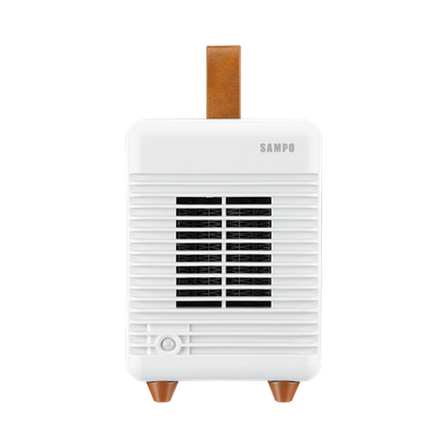

小坪數租屋電暖器怎麼挑？怕跳電先看功率：5 款 2026 冬季比較
本文怎麼整理。入冬後，小坪數套房和宿舍挑電暖器，可以先確認分路額定電流，再挑合適的功率檔位。以下依 2026 年 11 月 26 日的品牌官網規格整理，沒有實機測試，也不比較銷量。
快速結論：先排除不適合的
- 陶瓷款 NT$1,690–2,9802026-11-26 品牌官網標價，陶瓷款最高約為最低的 1.8 倍，12 月中更新時調整選款。主價位 NT$1,690–2,299。±0 XHH-Y030、北方 PTC155S 為跨價位參照；對流款北方 CNI-1000 為跨價位參照（NT$7,580），五款最高／最低約 4.49 倍。
- 550W–1,350W5 款的功率範圍
- 4 陶瓷＋1 對流類型
以 110V、15A 分路為例，額定視在功率為 1,650VA；依《用戶用電設備裝置規則》第 38 條第 4 款，連續負載上限為 12A。先確認現場分路額定，再合計同分路電器的電流。
-
只暖書桌或腳邊、怕跳電
聲寶 HX-TF06P｜固定 600W 不適合 要多段功率、遙控，或想靠它暖整間房的人（官方沒寫適用坪數）
-
要低檔、有官方坪數標示
±0 XHH-Y030｜60Hz 低檔 550W・官方 3–5 坪 不適合 要遙控，或要人感自動停的人（官網規格圖沒列） 查詢日無庫存 別買錯 核對台灣 60Hz 規格（550／1,100W），留意 50Hz 版本標示
-
要人感自動停、三段功率
IRIS JCH-12TDS1｜600W／1,000W／1,200W 不適合 要放浴室、需要官網有列 IP 等級的人
- 要遙控、擺頭
- 要對流、IP24、保固 3 年
編號為文章編排順序，不是實機評測排名。庫存只記錄查詢日，選購當下請再確認。
目錄
5 款候選怎麼對照
本站含蝦皮分潤連結，透過連結購買我可能獲得分潤，不影響你的價格
| 商品 | 功率 | 差異標示 | 價格 |
|---|---|---|---|
|
 |
600 W | 過熱保護人感 |
NT$1,690 官網建議售價（2026-11-26 查詢） |
|
|
550／1,100 W | 3–5 坪 |
NT$2,690 官網售價（2026-11-26 查詢）・跨價位參照查詢日無庫存 |
|
|
600／1,000／1,200 W | 人感兒童鎖 |
NT$2,2991 官網售價（2026-11-26 查詢） |
|
|
900／1,350 W | 超溫斷電遙控 |
NT$2,980 官網售價（2026-11-26 查詢）・跨價位參照查詢日售完 |
|
|
1,000 W | IP243–5 坪 |
NT$7,580 官網售價（2026-11-26 查詢）・跨價位參照查詢日售完 |
查詢日 2026-11-26・編號非排名・點型號看詳細
- 聲寶 HX-TF06P NT$1,690 官網建議售價（2026-11-26 查詢） 600 W · 陶瓷式 過熱保護 · 人感
-
 ±0 XHH-Y030
NT$2,690 官網售價（2026-11-26 查詢）・跨價位參照
550／1,100 W · 陶瓷式
3–5 坪 · 查詢日無庫存
±0 XHH-Y030
NT$2,690 官網售價（2026-11-26 查詢）・跨價位參照
550／1,100 W · 陶瓷式
3–5 坪 · 查詢日無庫存
-
 IRIS JCH-12TDS1
NT$2,2991 官網售價（2026-11-26 查詢）
600／1,000／1,200 W · 陶瓷式
人感 · 兒童鎖
IRIS JCH-12TDS1
NT$2,2991 官網售價（2026-11-26 查詢）
600／1,000／1,200 W · 陶瓷式
人感 · 兒童鎖
-
 北方 PTC155S
NT$2,980 官網售價（2026-11-26 查詢）・跨價位參照
900／1,350 W · 陶瓷式
超溫斷電 · 遙控 · 查詢日售完
北方 PTC155S
NT$2,980 官網售價（2026-11-26 查詢）・跨價位參照
900／1,350 W · 陶瓷式
超溫斷電 · 遙控 · 查詢日售完
-
 北方 CNI-1000
NT$7,580 官網售價（2026-11-26 查詢）・跨價位參照
1,000 W · 對流式
IP24 · 3–5 坪 · 查詢日售完
北方 CNI-1000
NT$7,580 官網售價（2026-11-26 查詢）・跨價位參照
1,000 W · 對流式
IP24 · 3–5 坪 · 查詢日售完
蝦皮售價依賣場即時變動，以點進去的頁面為準。
官網價依各品牌台灣官網，查詢日 2026-11-26。售價與庫存會變，不能當成蝦皮售價。
以下各款官網均列傾倒或顛倒斷電，表內只列出較不同的標示。「未列」＝該來源頁沒有標示，不代表沒有該功能。
1 IRIS 官網同筆商品另列標價 NT$5,499。XHH-Y030 功率為台灣 60 Hz 條件。
逐款比較
聲寶 SAMPO
HX-TF06P
聲寶 SAMPO HX-TF06P（陶瓷式，600W）
- 類型
- 陶瓷式
- 消耗功率
- 600W
- 機身尺寸
- 141 × 255 × 116 mm（寬 × 高 × 深）
- 定時
- 1、2、4 小時
- 安全功能
- 傾倒、過熱、異常超溫和異常電流保護
官方規格表列出消耗功率 600W，尺寸 141 × 255 × 116 mm（寬 × 高 × 深）。產品頁寫 PTC 陶瓷發熱，有人體感知，偵測無人使用會自動停止；定時關機可選 1、2、4 小時，另有 8 小時強制自動關機、30 秒散熱關機保護、可拆洗濾網，以及可吊掛的仿皮革提繩，並附收納袋。安全方面寫 UL94 V0 阻燃用料，以及傾倒、過熱、異常超溫和異常電流保護。官方規格表沒有列重量和適用坪數。官方建議售價 NT$1,690，頁面註明僅供參考，實際以經銷據點為準。固定 600W，對迴路負擔相對小，比較適合只暖書桌或腳邊，不要當成整間房的暖房機。
規格來源：品牌官網
±0 正負零
XHH-Y030
±0 正負零 XHH-Y030（陶瓷式，台灣 60Hz 為 550W／1,100W）
- 類型
- 陶瓷式
- 消耗功率
- 550W／1,100W（台灣 60Hz）
- 機身尺寸
- 約高 30 × 寬 29 × 深 11.5 cm
- 重量
- 約 2.6 kg
- 定時
- 1、3、6 小時
- 安全功能
- 機器顛倒會自動關閉
台灣電網是 60Hz。官網規格圖寫：60Hz 時強檔 1,100W、弱檔 550W；50Hz 才是強 1,200W、弱 600W。部分通路寫 1,200W／600W，那是 50Hz 的數字。適用坪數寫 3–5 坪內；尺寸約高 30 × 寬 29 × 深 11.5 cm，重量約 2.6 kg，電線約 1.7 m，定時關機 1、3、6 小時，陶瓷發熱體，產地中國。商品頁另寫可搬移、可調葉片角度，機器顛倒會自動關閉。台灣官網售價 NT$2,690，查詢當天顯示尚無庫存。機身較薄，有低檔 550W 和官方坪數標示；沒有遙控，規格圖也沒另列人體感知。
規格來源：品牌官網
IRIS OHYAMA
JCH-12TDS1
IRIS OHYAMA JCH-12TDS1（陶瓷式，600W／1,000W／1,200W）
- 類型
- 陶瓷式
- 消耗功率
- 600W／1,000W／1,200W
- 機身尺寸
- 17.5 × 19.15 × 37.1 cm（長 × 寬 × 高）
- 重量
- 2.7 kg
- 定時
- 1 小時／2 小時
- 安全功能
- 兒童鎖、傾倒或傾斜停止、過熱自動斷電
台灣官網品名是「大範圍 Slim Type 人感陶瓷電暖器」。官網圖寫三種模式：強力 1,200W、標準 1,000W、靜音 600W。人感可設 90 秒、5 分鐘或 10 分鐘，設定時間內沒感測到人體會切斷電源，之後再感應到人會恢復運轉；人體感應距離寫 2 m。另有 1 小時／2 小時定時、兒童鎖（長按 3 秒）、傾倒或傾斜會停止（扶正後要按電源鍵重開）、過熱自動斷電。比較表寫重量 2.7 kg，尺寸 17.5 × 19.15 × 37.1 cm（長 × 寬 × 高），可手動調整風向。BSMI 合格字號 R3C764。
官網寫暖風到達約 2 m，測試條件是室溫 21℃±1℃、約 6 坪實驗室、強力模式、AC100V／50Hz；台灣是 110V／60Hz，官網沒說明功率會不會不同。官網圖有洗手間、更衣室場景，但沒公布 IP 防水等級，不能把它當浴室機。圖上並註明就寢時請將電源關閉。官網當天顯示售價 NT$2,299，同一筆商品資料另有標價 NT$5,499，下單前以當下顯示為準。
規格來源：品牌官網
北方
PTC155S
北方 PTC155S（陶瓷式，900W／1,350W）
- 類型
- 陶瓷式
- 消耗功率
- 900W／1,350W
- 機身尺寸
- 約高 70 × 寬 24.5 × 深 24.5 cm
- 重量
- 約 1.8 kg
- 定時
- 1–12 小時預約關機
- 安全功能
- 傾倒／超溫自動斷電
官方寫消耗功率 1,350W，四段模式為送風、低溫 900W、高溫 1,350W、節能恆溫（可設 20–40℃）。淨重約 1.8 kg，尺寸約高 70 × 寬 24.5 × 深 24.5 cm，有紅外線遙控、左右擺動、1–12 小時預約關機、傾倒／超溫自動斷電、前網防燙材質，保固 1 年。官方沒列適用坪數。官網售價 NT$2,980，查詢當天顯示售完。重量輕，有遙控和 900W 低檔；高檔 1,350W 約 12.3A（110V、功率因數取 1）。若構成連續負載，已超過 15A 分路的 12A 上限。
規格來源：品牌官網
北方
CNI-1000
北方 CNI-1000（對流式，1,000W）
- 類型
- 對流式
- 消耗功率
- 1,000W
- 機身尺寸
- 約高 40 × 寬 55 × 深 14 cm
- 重量
- 約 3.95 kg
- 適用坪數
- 3–5 坪
- 安全功能
- IP24 防潑水檢測、傾倒自動斷電
這是五款裡唯一的對流式。官方寫消耗功率 1,000W，適用 3–5 坪，溫度可設 12–30℃，淨重約 3.95 kg，尺寸約高 40 × 寬 55 × 深 14 cm，生產國別為保加利亞（德國團隊研發設計），保固 3 年。功能包括 LED 顯示、IP24 防潑水檢測、1–24 小時預約開關機、睡眠模式、傾倒自動斷電。官網售價 NT$7,580，查詢當天顯示售完。官網標房間、浴室兩用，且有 IP24；防潑水不是可以沖水，安裝位置和離水距離仍要照說明書。官網售價明顯高於前面幾台陶瓷機，機身也比較重。
規格來源：品牌官網
適合誰
- 只暖書桌或腳邊、想選 600W 機型：聲寶 HX-TF06P（固定 600W，有人感和 8 小時強制關機）。官方沒寫適用坪數，不要期待它暖整間房。
- 要低檔 550W、官方寫 3–5 坪、機身較薄：±0 XHH-Y030（跨價位參照）。官網當時無庫存，買前先確認現貨，以及通路標的是 60Hz 還是 50Hz 功率。
- 要人感自動停，並在 600W／1,000W／1,200W 之間切換：IRIS JCH-12TDS1。睡覺時官網要求關機。IRIS 官網未公布 IP 等級，浴室請選原廠明示適用的機型，依說明書指定位置安裝。
- 要遙控、擺頭，且迴路負擔得起高檔 1,350W：北方 PTC155S（跨價位參照），平常可先用 900W。
- 要對流、官方 3–5 坪、IP24、保固 3 年，也接受官網七千多元價位：北方 CNI-1000（跨價位參照）。
資料與更新紀錄
- 最後核對日
- 核對範圍
- 分路負載、用電安全、電價、租屋電費及電鍋規格：2026-11-27 查裝置規則、標檢局、台電、內政部與大同。召回：2026-11-27 查標檢局公開召回公告，依品牌與完整型號檢索，未查得本文型號。
- 這次改了什麼
- 2026-11-27 修正分路、電費與租屋收費說明，補上用電安全與召回來源，並標出跨價位參照。另更新封面替代文字、目錄與型號排版。
- 原查詢紀錄
- 規格、價格、庫存沿用 2026-11-26 品牌官網紀錄；±0 官網顯示無庫存，北方兩款顯示售完。
- 召回來源
- 標檢局公開召回公告。